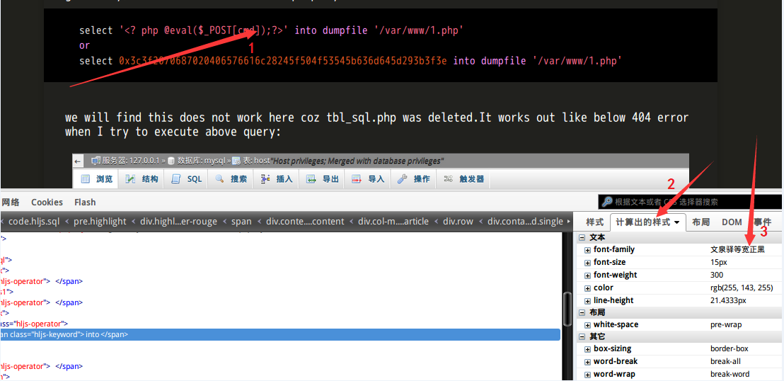

Use github and jekyll start github pages
2 minute read
0x01 useful links to learn
https://www.zhihu.com/question/20223939
https://github.com/jacobtomlinson/carte-noire
http://www.tuicool.com/articles/RZbEV3
https://help.github.com/articles/configuring-jekyll/
https://help.github.com/articles/setting-up-your-github-pages-site-locally-with-jekyll/
http://jekyllrb.com/docs/github-pages/#project-page-url-structure
http://jekyllcn.com/
https://learnetto.com/blog/tutorial-how-to-host-your-websites-for-free-using-github-pages
http://www.jimmylauzau.com/blog/2016/03/23/the-awesomeness-that-is-github-pages
http://pikipity.github.io/blog/kramdown-syntax-chinese-1.html kramdown语法
http://pikipity.github.io/blog/kramdown-syntax-chinese-2.html kramdown语法
http://platinhom.gitcafe.io/2015/11/06/Kramdown-note/ kramdown语法
https://ruby-china.org/topics/14005 web中文字体应用指南(i use 文泉驿等宽正黑 )
http://platinhom.github.io/2015/06/06/Markdown-note/ kramdown-note
From those links,I learned those steps(assume with jekyll installed):
0x02 Steps
1>gem install github-pages(very important)
2>jekyll new myblog
3>git clone https://github.com/jacobtomlinson/carte-noire.git
4>cp carte-noire/*/ myblog
5>vim myblog/css/style.scss(my modified style.scss file in the below)
https://raw.githubusercontent.com/xinghuacai/blog_backup/master/css/style.scss
>however,I do not know how to change highlight code block's font,I tried to make it by modifying css file,it did not work,till now the font of code block looks ugly.
6>vim myblog/_posts/2016-04-09-github-jekyll-blog.md
7>jekyll serve –watch(this command will build a _site folder)
8>create a new repository in github:xinghuacai.github.io
9>cd myblog/_sites && git init && git add . && git commit -a -m “my blog v1”
10>git remote add origin https://github.com/xinghuacai/xinghuacai.github.io.git
11>push -u origin master
12>succeed–>http://xinghuacai.github.io
0x03 Update articles
Notice,we need not to checkout --orphan gh-pages like some blogs telled us to ,a master branch is enough to do it.There is a .gitignore file in myblog/.gitignore (copied from carte-noire) which ignores _sites folder when git myblog/ to github as a blog_backup(https://github.com/xinghuacai/blog_backup).From then on,when I update new articles,I could only update xinghuacai.github.io repository,and take blog_badkup repository as a backup on github.So,later if I need add new article to xinghuacai.github.io,I will do:
vim myblog/_posts/newarticle.md(file name in 201x-0x-0x-xxx-xxx.md format)
cd myblog
rm -r _site
jekyll serve --watch(or jekyll build,jekyll serve contains jekyll build function)
mkdir ../tmp
cd ../tmp
git init
git pull https://github.com/xinghuacai/xinghuacai.github.io.git
cp -r ../myblog/_site/* .
git status
git add .
git commit -a -m "update articles"
git remote add origin https://github.com/xinghuacai/xinghuacai.github.io.git
git push -u origin master
rm -r ../tmp
0x04 Update
16-04-13
>>>finally I find how to change the font-family in the code block to make code block looks beautiful,not ugly any longer. 1,2,3 arrows in below pic show the process to find how to change the code block font.Firstly,move mouse's arrow to any code block like arrow 1 in below pic,and right click mouse to chose "use firebug to view elements".Secondly,left click mouse on the words like arrow 2 in below pic,and move mouse on "font-family",then I find it's "monospace",and the source css file is from "\_includes\head.html",the value is href="//netdna.bootstrapcdn.com/bootstrap/3.1.1/css/bbbbootstrap.min.css",download it to local css directory and rename it my_code.css,change \_includes\head.html to set the value to "../../../../../css/my_code.css".Finally,change monospace to "文泉驿等宽正黑" where needed in my_code.css

I feedback.
Let me know what you think of this article on twitter @quanyechavshuo or leave a comment below!
Let me know what you think of this article on twitter @quanyechavshuo or leave a comment below!
comments powered by Disqus